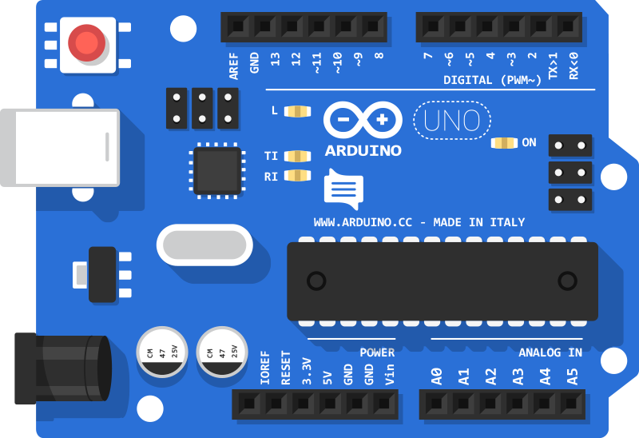

ඔබ ඇරඹිය යුත්තේ කොතැනින්ද?
By Deshan NawanjanaArduino සඳහා ඔබ නවකයෙක් නම් ඒ පිළිබඳ වැඩි තැකීමක් අවශ්ය වන්නේ නැහැ. Arduino යනු LEDයක් දැල්වීමේ සිට රොබෝ තාක්ෂණය දක්වා විහිදුණු ක්ෂේත්රයක් වුවත් ඉතා පහසුවෙන් තේරුම් ගැනීමේ හැකියාව තිබේ. මේ සඳහා ඉලෙක්ට්රොනික දැනුම සහ C පරිගණක භාෂාව පිළිබඳ යම් තාක් දුරට අවබෝධයක් තිබිය යුතුය.
මෙහි එන Arduino පුවරුව සහ Arduino IDE මෘදුකාංගය පිළිබඳ විස්තරය හොඳින් කියවා අවබෝධ කරගන්න. Arduino පුවරුවක් මිලදී ගැනීමේදී ආධුනික ඔබට වඩාත් සුදුසු වන්නේ Arduino UNO පුවරුවයි. මෙම පුවරුව, Arduino පුවරු මාලාවේ මිල අඩුම සහ සරළම පුවරුවයි. ඒ සමග Bread Board එකක් සහ සම්බන්ධක වයර කට්ටලයක් (Jumping Wires) සහ සංවේදක කිහිපයක් (Ultrasonic Sensor, IR Sensor) සහ LED කිහිපයක් මිලදී ගන්න. මේ සියල්ලම ඔබට රුපියල් 2000ට නොවැඩි වන මිලකට කොළඹ අවටින් සොයගත හැකිය.
වෙබ් අඩවියේ ඇතුලත් Coding පිටුවට පිවිස එහි ඇතුලත් මූලික උපදෙස් කියවන්න. එමගින් ක්රමලේඛණය කිරීම සහ දත්ත ආදානය ප්රතිදානය, උපාංග භාවිතා කරන අයුරු පිළිබඳ අදහසක් ලබා ගත හැකිය. ඒ අනුව Arduino පුවරුවක් සඳහා සම්බන්ධ කළ හැකි සංවේදක (Sensors) එකින් එක ගෙන ඒවා ක්රියාත්මක වන අයුරු සහ ඒවායෙන් ප්රතිදාන ලබා ගන්නා අයුරු හඳුනාගන්න. ඒ ආකාරයෙන් ඔබට Arduino හැසිරවීමේ මූලික දැනුම ලබා ගත හැකි අතර ඉන් පසුව වඩාත් සංකීර්ණ නිර්මාණ නිපදවීම සඳහා ඔබට සිත යෙදවිය හැකිය.
Arduino පුවරුව සහ එහි කොටස්

ඉහතින් දැක්වෙන්නේ Arduino සඳහා භාවිතා කළ හැකි කුඩාම සහ සරළම පරිපථයයි. මෙම පරිපථය UNO නමින් හැඳින්වේ. Arduino ක්ෂ්රේත්රයට ආධුනිකයින් සඳහා මුලින්ම අධ්යයනයට සුදුසු වන්නේද මෙම UNO පරිපථයයි. මෙහි ඉහළ සහ පහළ ප්රධාන වශයෙන් Pins 29ක් පවතී. (නිශ්පාදිත සමාගම අනුව වෙනස් විය හැකි නමුත් ඉහත රූපයේ පරිදි නම් කළ Pins අනිවාරයෙන් පවතී) අප නිර්මාණය කරන උපාංගය සඳහා අවශ්ය අනෙක් විද්යුත් සංරචක (Electronic Components) සම්බන්ධ කරනුයේ මෙම Pins වලටය. බොහෝ විට ගොඩනගන පරිපථය සංකීර්ණ වත්ම Bread Board සහ සම්බන්ධක වයර කැබලි භාවිතා කිරීමට සිදු වේ. මුලින්ම අප මෙහි ඇති Pins මොනවාදැයි හඳුනාගනිමු.
UNO පුවරුවේ ප්රධාන සම්බන්ධක සිදුරු:
- 0 [RX] = පරිගණකයෙන් දත්ත ලබාගැනීමට
- 1 [TX] = පරිගණකයට දත්ත සම්ප්රෙෂණයට
- 2 සිට 13 දක්වා = ඩිජිටල් දත්ත ආදානයට සහ ප්රතිදානයට (3, 5, 6, 9, 11 යන සිදුරු ප්රතිසම දත්ත කියවීමටද භාවිත කෙර්)
- A0 සිට A5 දක්වා = ප්රතිසම දත්ත ආදානයට
- Vin = පුවරුවට අමතර බලයක් සැපයීමට
- 3.3V = පුවරුවේ සාමාන්ය විභය ලබා ගැනීමට
- 5V = සම්බන්ධක බොහෝ විද්යුත් සංරචක සඳහා විභය ලබා ගැනීමට
- GND = අවම විභවය ලබා ගැනීමට (සිදුරු 3ක් පවතී)
මෙම සිදුරු භාවිතයෙන් එක් එක් ආකාරයේ කියවීම්, දත්ත ආදානය සහ ප්රතිදානය කිරීම Arduino මගින් ප්රධාන වශයෙන් සිදු කරයි. පරිපථයක් සකස් කිරීමේදී යොදාගන්නා Pins හොඳින් හඳුනාගනෙ භාවිතා කිරීම වැදගත් වේ. එමෙන්ම මෙම පුවරුව සමග පරිගණකයට සම්බන්ධ කළ හැකි USB Cable එකක්ද ලැබේ. මේ Cable එක ආධාරයෙන් පරිගණකයෙන් සැකසූ ක්රමලේඛය (Program) පුවරුවට උඩුගත කිරීම (Upload) කිරීම සිදු කරයි. එය පුවරුවට උඩුගත කළ පසු පරිගණයකට සම්බන්ධ කිරීමකින් තොරව වුවත් පුවරුව භාවිතා කළ හැකිය. මක් නිසාදයත් පරිගණකයෙන් උඩුගත කළ අවසාන වැඩසටහන පුවරුව මතකයේ තබා ගන්නා නිසාවෙනි. රෑපයේ පරිදි වම් පහළ කෙළවර ඇති විදුලි සැපයුමෙන් විදුලිය පමණක් ලබා දීමෙන්ද පුවරුව ක්රියාත්මක කළ හැකිය.
පුවරුවේ ඇතුලත් LED සහ Reset බටනය:
පුවරුවේ ඉහළ වම් කෙළවර බොත්තමත් පවතී. එම බොත්තම මගින් පුවරුවේ ක්රියාත්ම වෙමින් පවතින වැඩසටහන නැවත මුල සිට ක්රියාත්මක කිරීම කළ හැකිය. (Reset Button) තවද, පුවරුවේ LED 4ක් අඩංගුව ඇත එහි ON යන LEDh ය මගින් පුවර්වට විදුලිය සැපයී ඇති බවත්, TX සහ RX නම් LED මගින් පරිගණකය හා දත්ත සම්ප්රේෂණය වන බව දැන ගත හැකිය. මෙහි ඇති L නම් LEDය සෑම විටම 13වන Pin එක සහ GND Pin එක සමග සම්බන්ධව ඇත. මේ නිසා 13 වන Pin එකෙහි විභවය බහළ වෙත්ම L නම් LEDය දැල්වේ.
Arduino පුවරුව භාවිතයේදී සැළකිළිමත් විය යුතු කරුණු:
මෙය ඉතාමත් සිදුම් පුවරුවක් නිසාවෙන් ඉතාමත් ප්රවේශයෙන් භාවිත කළ යුතුය. පුවරුවට විදුලිය සපයා ඇති විටල එහි යටි පැත්තේ ඇති පෑස්සුම් අකින් ඇල්ලීම නොකළ යුතුය. මක් නිසාදයක් එමගින් පරිපථය ලුහුවත් වී පුවරුවට හෝ සම්බන්ධ කර ඇති අමතර උපාංගවලට හානි විය හැකි නිසාවෙනි. එමෙන්ම ක්රමලේඛණයක් කේතනයේදී පවා සැළකිලිමත් වීම වැදගත් වේ. යම් හෙයකින් උබ සකසන ක්රමලේඛය මගින් පුවරුව ක්රියාත්මක වන ආකාරය වුවද එයට සම්බන්ධ උපාංගවලට හානිදායක විය හැකිය.
Arduino IDE මෘදුකාංගය භාවිතය
Arduino පුවරුව සඳහා වැඩසටහනක් ලිවීමේදී ප්රථමයෙන් ඔබේ පරිගණකයේ Arduino මෘදුකාංගය ස්ථාපනය කර ගත යුතුය. පහළින් ඇති බටනය ක්ලික් කර නවතම Arduino මූදුකාංග සංස්කරණය ලබා ගන්න.
Download Arduino IDE Setupදැන් ඔබ මෙම Arduino IDE අතුරුමුහුණතේ කොටස් හඳුනාගත යුතුය. ඉහළින්ම Main Menu එක සහ ඊට පහළින් වැඩි භාවිතකේ ඇති බටන 5ක් ඇතුලත් වේ.
- Verify Button - ක්රමලේඛණයේ දෝෂ පරික්ෂා කිරීම
- Upload Button - ක්රමලේඛණය පරිගණක භාෂාවට පරිවර්තනය කර පුවරුවට උඩුගත (Upload) කිරීම
- New Button - නව ක්රමලේඛණයක් තැනීම
- Open Button - ක්රමලේඛණ විවෘත කිරීම
- Save Button - ක්රමලේඛණය පරිගණකයේ ගබඩා කිරීම
එමෙන්ම තිරයේ දකුණු කෙළවර තවත් විශේෂ බටනයක් වේ. මෙම ටබනය Serial Monitor විවෘත කිරීමට භාවිතා කෙරේ. Serial Monitor යනු Arduino පුවරුවෙන් ලබා ගන්න පුතිදාන පරිගණකයේ දර්ශණය කර ගත හැකි සහ පුවරුව ක්රියාත්මක වෙමින් තිබියදී එයට පරිගණකය හරහා දත්ත ඇතුල් කළ හැකි මෙවලමයි.
මෘදුකාංගය තුළ කළ යුතු පෙර සැකසුම්:
මෙහිදී ඔබ භාවිතා කරන Arduino පුවරුවේ වර්ගය මෘදුකාංගයෙන් පෙර සිටම තෝරා දිය යුතුය. ඒ සඳහා Main Menu එකෙහි Tools > Board වෙත ගොස් ඔබේ පුවරුවේ වර්ගය තෝරන්න. (ඔබ සතුව ඇත්තේ UNO පුවරුවක් නම් Arduino/Genuino Uno යන්න තෝරන්න)
කේතනය කිරීමේ මූලික පියවර:
Arduino සඳහා ක්රමලේඛ ලිවීමේදී භාවිතා වෙන්නේ C පරිගණක භාෂාවේ කේතන නීති රීති වේ. මේ නිසා C පරිගණක භාවිව පිළිබඳ දැනුමක්ද ඔබ සතු විය යුතුය. මෙහි සෑම ක්රමලේඛයකම ප්රධාන සහ අනිවාර්ය Functions දෙකක් අඩංගු වේ. ඒවා නම් setup සහ loop යන්නයි. පුවරුව ක්රියාත්මක වීමට පටන් ගත් සැනින් setup යන කොටස ධාවනය වන අතර ඉන් පසුව loop යන කොටස නොකඩවා පුනරාවර්තීව ධාවනය සිදු වේ. මේ නිසා කේතනය කිරීමේදී ආරම්භයේ පුවරුව සැකසී තිබිය යුතු ආකාරය setup යන කොටසට ඇතුලත් කළ යුතුය.
ක්රමලේඛණය කිරීමේ උපදෙස් සහ නිදසුන් පියවරින් පියවර මෙම වෙබ් අඩවියේ Coding යන පිටුවේ ඇතුලත් වේ.
Go To Coding Page